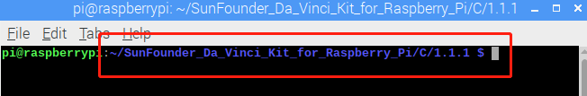

Bemerkung
Hallo und willkommen in der SunFounder Raspberry Pi & Arduino & ESP32 Enthusiasten-Gemeinschaft auf Facebook! Tauchen Sie tiefer ein in die Welt von Raspberry Pi, Arduino und ESP32 mit anderen Enthusiasten.
Warum beitreten?
Expertenunterstützung: Lösen Sie Nachverkaufsprobleme und technische Herausforderungen mit Hilfe unserer Gemeinschaft und unseres Teams.
Lernen & Teilen: Tauschen Sie Tipps und Anleitungen aus, um Ihre Fähigkeiten zu verbessern.
Exklusive Vorschauen: Erhalten Sie frühzeitigen Zugang zu neuen Produktankündigungen und exklusiven Einblicken.
Spezialrabatte: Genießen Sie exklusive Rabatte auf unsere neuesten Produkte.
Festliche Aktionen und Gewinnspiele: Nehmen Sie an Gewinnspielen und Feiertagsaktionen teil.
üëâ Sind Sie bereit, mit uns zu erkunden und zu erschaffen? Klicken Sie auf [hier] und treten Sie heute bei!
1.1.1 Blinkende LED
Einführung
In dieser Lektion lernen wir, wie man durch Programmierung eine blinkende LED erzeugt. Durch Ihre Einstellungen kann Ihre LED eine Reihe interessanter Phänomene erzeugen. Jetzt mach es.
Komponenten

Bemerkung
Um reibungslos fortzufahren, müssen Sie Ihren eigenen Raspberry Pi, TF-Karte und Raspberry Pi-Strom mitbringen.
Prinzip
Steckbrett
Ein Steckbrett ist eine Konstruktionsbasis für das Prototyping von Elektronik. Es wird verwendet, um Schaltungen schnell aufzubauen und zu testen, bevor ein Schaltungsentwurf abgeschlossen wird. Und es hat viele Löcher, in die oben erwähnte Komponenten wie ICs und Widerstände sowie Jumperdrähte eingesetzt werden können. Mit dem Steckbrett können Sie Komponenten einfach anschließen und entfernen.
Das Bild zeigt die interne Struktur eines Voll+ Steckbretts. Obwohl diese Löcher auf dem Steckbrett unabhängig voneinander zu sein scheinen, sind sie tatsächlich intern über Metallstreifen miteinander verbunden.

LED
LED ist eine Art Diode. Die LED leuchtet nur, wenn der lange Stift der LED mit der positiven Elektrode und der kurze Stift mit der negativen Elektrode verbunden ist.


Die LED kann nicht direkt an die Stromversorgung angeschlossen werden, die Komponente kann daruas beschädigt werden. Ein Widerstand mit 160 Ω oder mehr (Arbeit in 5V) muss in der LED-Schaltung in Reihe geschaltet werden.
Widerstand
Der Widerstand ist ein elektronisches Element, das den Zweigstrom begrenzen kann. Ein fester Widerstand ist ein Tpy von Widerstand, dessen Widerstand nicht geändert werden kann, während der eines Potentiometers oder eines variablen Widerstands eingestellt werden kann.
In diesem Kit wird ein fester Widerstand angewendet. In der Schaltung ist es wichtig, die angeschlossenen Komponenten zu schützen. Die folgenden Bilder zeigen ein reales Objekt, einen 220Ω-Widerstand und zwei allgemein verwendete Schaltungssymbole des Widerstands. Ω ist die Widerstandseinheit und die größeren Einheiten umfassen KΩ, MΩ usw. Ihre Beziehung kann wie folgt gezeigt werden: 1 MΩ = 1000 KΩ, 1 KΩ = 1000 Ω. Normalerweise ist der Widerstandswert darauf markiert. Wenn Sie diese Symbole in einer Schaltung sehen, bedeutet, es gibt ein Widerstand.


Wenn wir einen Widerstand verwenden, müssen wir zuerst seinen Widerstand kennen. Hier sind zwei Methoden: Sie können die Bänder am Widerstand beobachten oder den Widerstand mit einem Multimeter messen. Es wird empfohlen, die erste Methode zu verwenden, da diese bequemer und schneller ist. Verwenden Sie ein Multimeter, um den Wert zu messen.
Wie auf der Karte gezeigt, steht jede Farbe für eine Nummer.

Schematische Darstellung
In diesem Experiment schließen Sie einen 220 Ω-Widerstand an die Anode (den langen Pin der LED) und dann den Widerstand an 3,3 V an und verbinden Sie die Kathode (den kurzen Pin) der LED mit GPIO17 von Raspberry Pi. Da um eine LED einzuschalten, muss der GPIO17-Niveau niedrig (0V) sein. Wir können dieses Phänomen durch Programmierung erhalten.
Bemerkung
Pin11 bezieht sich von links nach rechts auf den 11. Pin des Raspberry Pi. Die entsprechenden wiringPi und BCM-Pin-Nummern sind in der folgenden Tabelle aufgeführt.
In den C-Sprachinhalten machen wir GPIO0 sz bis 0 in der wiringPi. U Unter den Python-Sprachinhalten, BCM 17 ist 17 in der BCM-Spalte der folgenden Tabelle. Gleichzeitig sind sie gleich mit dem 11. Pin des Raspberry Pi, Pin 11.
T-Karte Name |
physisch |
wiringPi |
BCM |
GPIO17 |
Pin 11 |
0 |
17 |

Experimentelle Verfahren
Schritt 1: Bauen Sie die Schaltung auf.

Für Benutzer in C-Sprache
Schritt 2: Gehen Sie zum Ordner des Codes.
Wenn Sie einen Bildschirm verwenden, sind die folgenden Schritte empfohlen.
Gehen Sie zu ~/ und suchen Sie den Ordner davinci-kit-for-raspberry-pi .
Suchen Sie C im Ordner, klicken Sie mit der rechten Maustaste darauf und wählen Open in Terminal.

Dann öffnet sich ein Fenster wie unten gezeigt. Nun haben Sie den Pfad des Codes 1.1.1_BlinkingLed.c eingegeben.
{kind=link}
In den folgenden Lektionen verwenden wir den Befehl, um die Codedatei einzugeben, anstatt mit der rechten Maustaste zu klicken. Aber Sie können die Methode wählen, die Sie bevorzugen.
Wenn Sie sich beim Raspberry Pi aus der Ferne anmelden, wechseln Sie mit
cddas Verzeichnis:
cd ~/davinci-kit-for-raspberry-pi/c/1.1.1/
Bemerkung
Ändern Sie das Verzeichnis in den Codepfad in diesem Experiment durch cd.
In jedem Fall befinden Sie sich jetzt im Ordner C. Die weiteren Verfahren, die auf diesen beiden Methoden basieren, sind gleich. Lass uns weitermachen.
Schritt 3: Kompilieren Sie die Kode
gcc 1.1.1_BlinkingLed.c -o BlinkingLed -lwiringPi
Bemerkung
note: gcc ist die gcc ist die GNU Compilersammlung.. Hier funktioniert es wie das Kompilieren der C-Sprachdatei 1_BlinkingLed.c und das Ausgeben einer ausführbaren Datei.
Im Befehl bedeutet -o die Ausgabe (das Zeichen unmittelbar nach -o ist die Dateinamenausgabe nach der Kompilierung,
und eine ausführbare Datei namens BlinkingLed wird hier generiert) , -lwiringPi ist das Laden der Bibliothek wiringPi ( l ist die Abkürzung der Bibliothek).
Schritt 4: Führen Sie die Ausgabe der ausführbaren Datei im vorherigen Schritt aus.
sudo ./BlinkingLed
Bemerkung
Um das GPIO zu steuern, müssen Sie das Programm mit dem Befehl sudo (Superuser do) ausführen. Der Befehl ./ gibt das aktuelle Verzeichnis an.
Der gesamte Befehl ist für die Ausführung der BlinkingLed im aktuellen Verzeichnis.

Nachdem der Kode ausgeführt wurde, blinkt die LED.
Bemerkung
Wenn es nach dem Ausführen nicht funktioniert oder eine Fehlermeldung angezeigt wird wiringPi.h: No such file or directory, please refer to C-Code funktioniert nicht? .
Wenn Sie die Kodedatei 1.1.1_BlinkingLed.c bearbeiten möchten, drücken Sie Ctrl + C ,
um die Ausführung des Kodes zu beenden. Geben Sie dann den folgenden Befehl ein und öffnen es:
nano 1.1.1_BlinkingLed.c
Bemerkung
nano ist ein Texteditor. Der Befehl wird verwendet, um die Kodedatei 1.1.1_BlinkingLed.c mit diesem Tool zu öffnen.
Drücken Sie Ctrl+X für Ausfahrt Wenn Sie die Kode geändert haben, werden Sie gefragt,
ob Sie die Änderungen speichern möchten oder nicht. Geben Sie Y (speichern) oder N (nicht speichern) ein.
Drücken Sie dann die Enter , um den Vorgang zu beenden. Wiederholen Sie Schritt 3 und Schritt 4 , um den Effekt nach dem Ändern zu sehen.

Code
Der Programmkode wird wie folgt angezeigt:
#include <wiringPi.h>
#include <stdio.h>
#define LedPin 0
int main(void)
{
// When initialize wiring failed, print message to screen
if(wiringPiSetup() == -1){
printf("setup wiringPi failed !");
return 1;
}
pinMode(LedPin, OUTPUT);// Set LedPin as output to write value to it.
while(1){
// LED on
digitalWrite(LedPin, LOW);
printf("...LED on\n");
delay(500);
// LED off
digitalWrite(LedPin, HIGH);
printf("LED off...\n");
delay(500);
}
return 0;
}
Code Erklärung
include <wiringPi.h>
Die Hardware-Laufwerksbibliothek wurde für die C-Sprache von Raspberry Pi entwickelt. Das Hinzufügen dieser Bibliothek fördert die Initialisierung der Hardware und die Ausgabe von I/O ports, PWM usw.
#include <stdio.h>
Standard I/O Bibliothek. Die Pintf-Funktion zum Drucken der auf dem Bildschirm angezeigten Daten wird von dieser Bibliothek realisiert. Es gibt viele andere Leistungsfunktionen, die Sie erkunden können.
#define LedPin 0
Pin GPIO17 der T_Erweiterungskarte entspricht dem GPIO0 in WiringPi. Weisen Sie Ledpin GPIO0 zu, was GPIO0 im zukünftigen Kode darstellt.
if(wiringPiSetup() == -1){
printf("setup wiringPi failed !");
return 1;
Dadurch wird wiringPi initialisiert und geht davon aus, dass das aufrufende Programm das wiringPi Nummerierungsschema verwendet.
Diese Funktion muss mit Root-Rechten aufgerufen werden. Wenn die Initialisierung der Verkabelung fehlgeschlagen ist, drucken Sie die Nachricht auf dem Bildschirm. Die Funktion return wird verwendet, um aus der aktuellen Funktion herauszuspringen. Wenn Sie die Funktion Rückgabe in main() verwenden, wird das Programm beendet.
pinMode(LedPin, OUTPUT);
Stellen Sie LedPin als Ausgabe ein, um einen Wert darauf zu schreiben.
digitalWrite(LedPin, LOW);
Stellen Sie GPIO0 auf 0V (niedriger Niveau) ein. Da die Kathode der LED mit GPIO0 verbunden ist,
leuchtet die LED auf, wenn GPIO0 niedrig eingestellt ist. Im Gegenteil, stellen Sie GPIO0 als High-Level ein.
digitalWrite(LedPin, HIGH): Die LED erlischt.
printf("...LED off\n");
Die printf-Funktion ist eine Standardbibliotheksfunktion und ihr Funktionsprototyp befindet sich in der Header-Datei stdio.h.
Die allgemeine Form des Aufrufs lautet: printf("Format Control String“, Spalten der Ausgabetabelle) .
Die Formatsteuerzeichenfolge wird verwendet, um das Ausgabeformat anzugeben, das in Formatzeichenfolge und Nichtformatzeichenfolge unterteilt ist.
Die Formatzeichenfolge beginnt mit %, gefolgt von Formatzeichen, z. B. %d für die Ausgabe von Dezimalzahlen.
Unformatierte Zeichenfolgen werden als Prototypen gedruckt. Hier wird eine nicht formatierte Zeichenfolge verwendet, gefolgt von n,
einem Zeilenumbruchzeichen, das den automatischen Zeilenumbruch nach dem Drucken einer Zeichenfolge darstellt.
delay(500);
Die delay(500) hält den aktuellen HIGH- oder LOW-Status für 500 ms.
Dies ist eine Funktion, die das Programm für einen bestimmten Zeitraum anhält. Und die Geschwindigkeit des Programms wird von unserer Hardware bestimmt. Hier schalten wir die LED ein oder aus. Wenn es keine Verzögerungsfunktion gibt, führt das Programm das gesamte Programm sehr schnell und kontinuierlich aus. Wir brauchen also die Verzögerungsfunktion, um das Programm schreiben und debuggen zu können.
return 0;
Normalerweise wird es hinter der Hauptfunktion platziert, was anzeigt, dass die Funktion bei erfolgreicher Ausführung 0 zurückgibt.
Für Python-Sprachbenutzer
Schritt 2: Gehen Sie zum Ordner des Codes und führen Sie ihn aus.
Wenn Sie einen Bildschirm verwenden, sind die folgenden Schritte empfohlen.
Suchen Sie 1.1.1_BlinkingLed.py und doppelklicken Sie darauf, um es zu öffnen. Jetzt bist du in der Datei.
Klicken Sie im Fenster auf Run ->Run Module . Der folgende Inhalt wird angezeigt.
Um die Ausführung zu stoppen, klicken Sie einfach auf die X-Schaltfläche oben rechts, um sie zu schließen, und kehren Sie dann zum Code zurück. Wenn Sie die Kode ändern, müssen Sie ihn zuerst speichern, bevor Sie auf Run Module (F5) klicken. Dann können Sie die Ergebnisse sehen.
Wenn Sie sich beim Raspberry Pi aus der Ferne anmelden, geben Sie den folgenden Befehl ein:
cd ~/davinci-kit-for-raspberry-pi/python
Bemerkung
Wechseln Sie in diesem Experiment per cd in den Pfad der Kode.
Schritt 3: Führen Sie die Kode aus
sudo python3 1.1.1_BlinkingLed.py
Bemerkung
Hier tun sudo - superuser do und python bedeutet, die Datei von Python auszuführen.
Nachdem der Kode ausgeführt wurde, blinkt die LED.
Schritt 4: Wenn Sie die Dodedatei 1.1.1_BlinkingLed.py , bearbeiten möchten,
drücken Sie Ctrl + C, um die Ausführung der Kode zu beenden. Geben Sie dann den folgenden Befehl ein, um 1.1.1_BlinkingLed.py: zu öffnen:
nano 1.1.1_BlinkingLed.py
Bemerkung
nano ist ein Texteditor. Mit dem Befehl wird die Dodedatei 1.1.1_BlinkingLed.py by this tool.von diesem Tool geöffnet.
Drücken Sie Ctrl+X für Ausfahrt Wenn Sie die Kode geändert haben, werden Sie gefragt,
ob Sie die Änderungen speichern möchten oder nicht. Geben Sie Y (speichern) oder N (nicht speichern) ein.
Drücken Sie dann Enter, um den Vorgang zu beenden. Geben Sie nano 1.1.1_BlinkingLed.py erneut ein, um den Effekt nach der Änderung zu sehen.
Code
Bemerkung
Sie können den folgenden Code Ändern/Zurücksetzen/Kopieren/Ausführen/Stoppen. Zuvor müssen Sie jedoch zu einem Quellcodepfad wie davinci-kit-for-raspberry-pi/python gehen.
import RPi.GPIO as GPIO
import time
LedPin = 17
def setup():
# Set the GPIO modes to BCM Numbering
GPIO.setmode(GPIO.BCM)
# Set LedPin's mode to output,and initial level to High(3.3v)
GPIO.setup(LedPin, GPIO.OUT, initial=GPIO.HIGH)
# Define a main function for main process
def main():
while True:
print ('...LED ON')
# Turn on LED
GPIO.output(LedPin, GPIO.LOW)
time.sleep(0.5)
print ('LED OFF...')
# Turn off LED
GPIO.output(LedPin, GPIO.HIGH)
time.sleep(0.5)
# Define a destroy function for clean up everything after the script finished
def destroy():
# Turn off LED
GPIO.output(LedPin, GPIO.HIGH)
# Release resource
GPIO.cleanup()
# If run this script directly, do:
if __name__ == '__main__':
setup()
try:
main()
# When 'Ctrl+C' is pressed, the program destroy() will be executed.
except KeyboardInterrupt:
destroy()
Code Erklärung
#!/usr/bin/env python3
Wenn das System dies erkennt, durchsucht es den Installationspfad von Python in der Umgebung env und ruft dann den entsprechenden Interpreter auf,
um den Vorgang abzuschließen. Dies soll verhindern, dass der Benutzer die Python nicht auf dem Defaultpfad /usr/bin installiert.
import RPi.GPIO as GPIO
Importieren Sie auf diese Weise die RPi.GPIO-Bibliothek und definieren Sie dann eine Variable, GPIO, um RPI.GPIO in der folgenden Kode zu ersetzen.
import time
Zeitpaket importieren, für Zeitverzögerungsfunktion im folgenden Programm.
LedPin = 17
Die LED wird mit dem GPIO17 der T-förmigen Erweiterungskarte, nämlich BCM 17, verbunden.
def setup():
GPIO.setmode(GPIO.BCM)
GPIO.setup(LedPin, GPIO.OUT, initial=GPIO.HIGH)
Stellen Sie den LedPin-Modus auf Ausgabe und den AnfangsNiveau auf Hoch (3.3v).
Es gibt zwei Wisen, die IO -Pins eines Raspberry Pi in RPi.GPIO zu nummerieren: BOARD-Nummern und BCM-Nummern. In unseren Lektionen verwenden wir BCM-Nummern. Sie müssen jeden Kanal einrichten, den Sie als Eingang oder Ausgang verwenden.
GPIO.output(LedPin, GPIO.LOW)
Stellen Sie GPIO17 (BCM17) auf 0V (niedriger Niveau) ein. Da die Kathode der LED mit GPIO17 verbunden ist, leuchtet die LED auf.
time.sleep(0.5)
Verzögerung um 0,5 Sekunden. Hier ähnelt die Anweisung der Verzögerungsfunktion in der Sprache C, die Einheit ist die zweite.
def destroy():
GPIO.cleanup()
Definieren Sie eine Zerstörungsfunktion, um alles nach Abschluss des Skripts zu bereinigen.
if __name__ == '__main__':
setup()
try:
main()
# When 'Ctrl+C' is pressed, the program destroy() will be executed.
except KeyboardInterrupt:
destroy()
Dies ist die allgemeine Ausführungsstruktur der Kode Wenn das Programm gestartet wird, wird der Pin durch Ausführen von setup() initialisiert und anschließend der Kode in der Funktion main() ausgeführt,
um den Pin auf hohe und niedrige Niveau zu setzen. Wenn Ctrl+C gedrückt wird, wird das Programm destroy() ausgeführt.
Phänomen Bild